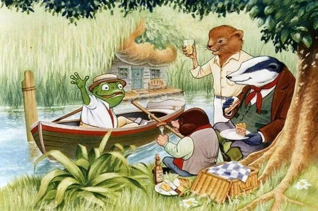

情节介绍（Plot Summary）

- 故事梗概
故事主人公蛤蟆先生是个优秀的富二代，三代单传，爷爷和爸爸都是成功企业家，
他剑桥毕业，工作优越，交际广泛，标准的人生赢家，是很多人艳羡的对象。
然而别人眼中的人生赢家蛤蟆先生看似爱笑爱闹，其实内心却一直有苦说不出。
尤其是最近情绪低落，郁郁寡欢，一个人躲在屋里，连起床梳洗的力气都没有。
朋友们非常担心他，建议他去做心理咨询。在10次心理咨询中，
蛤蟆在咨询师苍鹭的带领下，勇敢探索了自己的内心世界，也逐渐找回了信心与希望…
- 咨询过程
- 第一次咨询：明确咨询的基本前提——咨询的意愿一定是自发的，没有人能逼你成长。
- 第二次咨询：苍鹭医生通过情绪温度计的模式，引导蛤蟆先生觉察到了自己的感受和想法，并在咨询中不断提出“你的感觉怎么样”、“你有怎样的感受”这类问题，使蛤蟆先生持续保持关注状态，并引出“儿童自我状态（Child Ego State）”。
- 第三次咨询：苍鹭医生采用老师的讲解模式，详细解释了“儿童自我状态”，并布置作业“回忆童年”。
- 第四次咨询：苍鹭医生引导蛤蟆先生回忆童年往事，分析蛤蟆先生的行为模式和心理成因。咨询过程中由于医生的共情（Empathy），蛤蟆先生感到了支持和理解，负面情绪逐渐消除。
- 第五次咨询：具体分析上一次咨询遗留的问题：愤怒（Anger）。帮助来访者明确，他并不是不会愤怒，而是一直采用特殊的方式发泄愤怒。
- 第六次咨询：探讨獾来访后蛤蟆先生的情绪感受，提出“共谋（Collusion）”的概念，引出“父母自我状态（Parent Ego State）”，了解父母自我状态如何运作，得出结论蛤蟆先生一直在自我惩罚。
- 第七次咨询：蛤蟆先生状态好多了，明显比过去感到快乐，精力也充沛了许多，虽然时有负面情绪，但不会再被牵着鼻子走，咨询师苍鹭由此引出“成人自我状态（Adult Ego State）”、“条件反射（Conditioned Reflex）”等概念，让蛤蟆先生懂得只有自己可以改变自己。
- 第八次咨询：蛤蟆先生在回忆时不再谴责自己，他能找到事件之间的联系，能客观地看问题，而不再感到内疚。他能够反思自己的所作所为，并从中学习领悟。
- 第九次咨询：蛤蟆先生告诉苍鹭医生在回顾人生经历时领悟到的想法，苍鹭提出“人生坐标（Life Positions）”、“心理游戏（Psychological Games）”、“自证预言（Self-Fulfilling Prophecy）”的概念。
- 第十次咨询：详细分析各种人生坐标中的心理游戏，随后蛤蟆发生了更为激烈的阻抗，蛤蟆发生了一场颇有意义的爆发。
- 结束咨询：探讨前一次咨询中的情绪爆发的意义，指出那是因为蛤蟆对咨询师发生移情（Transference），将咨询师当做父亲，情绪爆发实为反抗对父亲的依赖。苍鹭还解释了“情商（EQ）”、“共情（Empathy）”、“独立性（Independency）”、“共生性（Interdependency）”的概念，并和蛤蟆一起总结十次咨询后发生的变化。